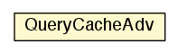

jason.asSemantics
Class QueryCacheAdv

java.lang.Object
 jason.asSemantics.QueryCacheAdv
jason.asSemantics.QueryCacheAdv
public class QueryCacheAdv
- extends java.lang.Object
|
Field Summary |
protected java.util.logging.Logger |
logger
|
| Methods inherited from class java.lang.Object |
clone, equals, finalize, getClass, hashCode, notify, notifyAll, wait, wait, wait |
logger
protected java.util.logging.Logger logger
QueryCacheAdv
public QueryCacheAdv(Agent ag,
QueryProfiling p)
reset
public void reset()
getCache
public Pair<Literal,java.util.Iterator<Unifier>> getCache(Literal f)
addAnswer
public void addAnswer(Literal f,
Unifier a)
queryFinished
public void queryFinished(Literal f)
toString
public java.lang.String toString()
- Overrides:
toString in class java.lang.Object